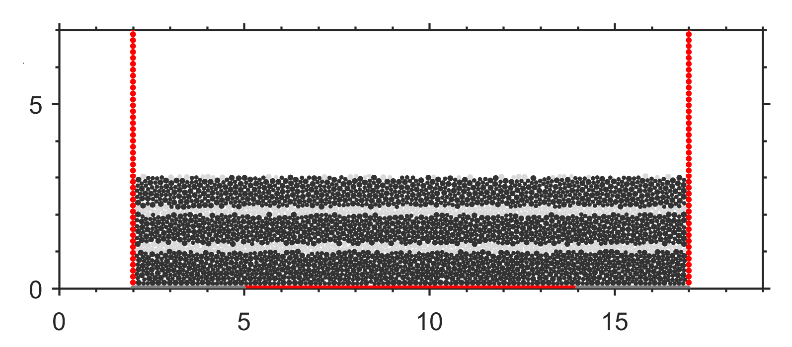
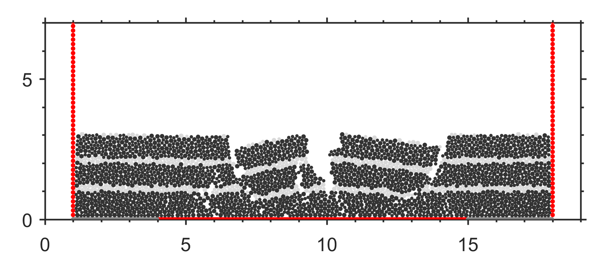
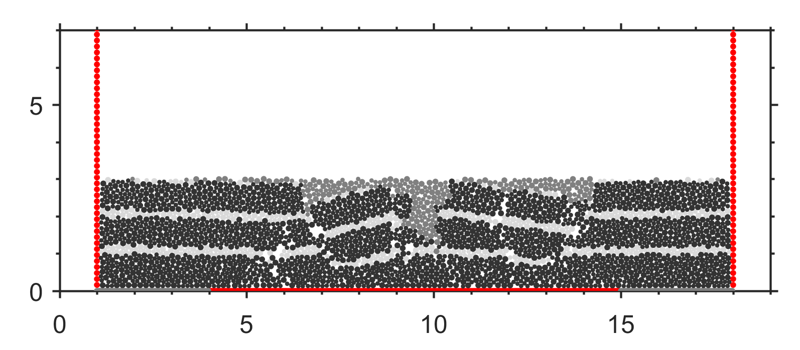
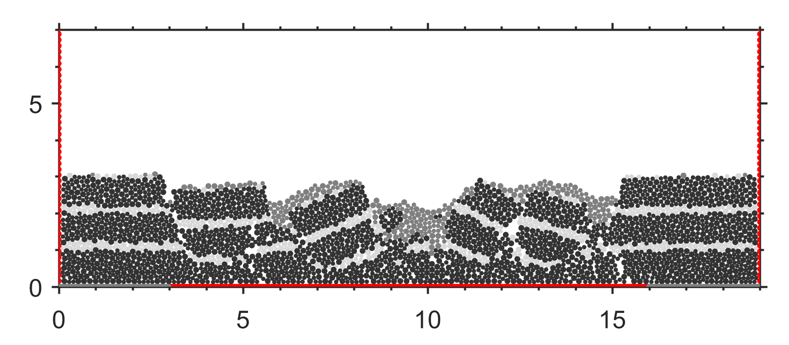
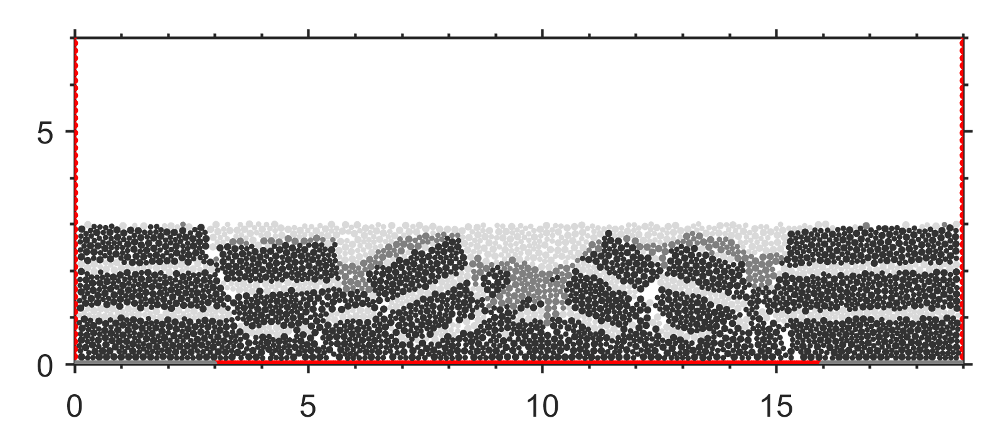

download： extens_ductile_patent.py
#2024-04-04
#建议使用notepad++查看本文件
#LI ChangSheng @ NanJing Uninversity
#E-mail: sheng0619@163.com
#more info, see www.geovbox.com
######################################
# title: 韧性基底伸展构造实例
#详细解释见发明专利：李长圣,尹宏伟,吴珍云,等. 一种基于离散元的裂谷盆地伸展过程模拟方法[P]. 江西省：CN111008472B,2023-11-21.
#本示例初始叠合率cratio=临时半径缩放系数rext=0.4，取值范围0.0-1.0
#括号内参数可根据模型大小及个人需要修改
#脚本命令不区分大小写
#######################################
START
SET disk 0
BOX left 1.0e-3 right 40000.0 bottom 1.0e-3 height 12000.0 kn=4e10 ks=4e10 fric 0.30
######################################################################################################
#初始叠合率 cratio=|AO|/(rA+rO),即圆心距离(|AO|)与平衡距离(rA+rO)的比值
GLINE p1 ( 10000.0 , 1000.0 ) p2 ( 25000.0 , 1000.0 ), rad 80.0 cratio 0.4 color=red GROUP wall_bom
######################################################################################################
GLINE p1 ( 10000.0 , 1160.0 ) p2 ( 10000.0 , 11000.0 ), rad 80.0 color=red GROUP wall_lef
GLINE p1 ( 25000.0 , 1160.0 ) p2 ( 25000.0 , 11000.0 ), rad 80.0 color=red GROUP wall_rig
FIX x y spin RANGE group wall_bom
FIX x y spin RANGE group wall_lef
FIX x y spin RANGE group wall_rig
GEN NUM 200000, rad discrete 60.0 80.0, x 10000.0, 25000.0, y 1000.0, 8000.0, color black GROUP ball_rand
PROP den 2.5e3, fric 0.0, shear 2.9e9, poiss 0.2, damp 0.4, hertz
DRAW INTERVAL 200, bfill wall
SET STEPBAR 1000
SET print 5000
SET ps 5000
SET DT 5e-2,
SET GRAVITY ( 0.0, -10.0 )
CYC 10000
DEL RANGE x 10001.0, 24999.0, y 4000.0, 15000.0
CYC 5000
EXP initxyr.dat RANGE group ball_rand
SAV initxyr.sav
PROP color mg RANGE group ball_rand
PROP color lg RANGE x 10001.0 24999.0 y 2000.0 2200.0
PROP color lg RANGE x 10001.0 24999.0 y 3000.0 3200.0
PROP color lg RANGE x 10001.0 24999.0 y 4000.0 4200.0
PROP fric 0.3 RANGE GROUP wall_bom
PROP fric 0.3 RANGE GROUP wall_lef
PROP fric 0.3 RANGE GROUP wall_rig
PROP ebmod 2e8 gbmod 2e8 tstrength 2e7 sstrength 4e7 fric 0.3 RANGE group ball_rand
PROP group wall_mov0 color blue RANGE x 9000.0 13000.0 y 999.0 1001.0
PROP group wall_mov1 color blue RANGE x 22000.0 31000.0 y 999.0 1001.0
######################################################################################################
#临时半径缩放系数rext=rtmp/rold
PROP tolerate rext 0.4 ebmod 2e8 gbmod 2e8 tstrength 2e100 sstrength 4e7 fric 0.3 RANGE group wall_bom and group wall_mov0
PROP tolerate rext 0.4 ebmod 2e8 gbmod 2e8 tstrength 2e100 sstrength 4e7 fric 0.3 RANGE group wall_bom and group wall_mov1
######################################################################################################
#释放中间部分的墙体，以便其可以在左右墙体拉伸下，可以自由伸展开
FREE x RANGE group wall_bom
#墙体wall_rig和wall_mov1向右移动
INI xv 2.0, RANGE group wall_rig
INI xv 2.0, RANGE group wall_mov1
#墙体wall_lef和wall_mov0向左移动
INI xv -2.0, RANGE group wall_lef
INI xv -2.0, RANGE group wall_mov0
#设置辅助墙体，用于设置伸展距离，这里设置墙体id=1向右移动1000m
WALL id 1 nodes ( 26000.0 1080.0 ) ( 26000.0 5000.0 ), kn=0e3 ks=0e3 fric=0.0 color=black
WALL id 1 xv 2.0
IMPLE wall id 1 xmove 1000.0 print 500.0 ps 500.0
#沉积1
GEN NUM 200000, rad discrete 60.0 80.0 , x( 9000.0,26000.0) y ( 4000.0, 6000.0 ), GROUP ballsed2
PROP color blue den 2.5e3, fric 0.3, shear 2.9e9, poiss 0.2, damp 0.4, hertz RANGE group ballsed2
#墙体停止移动
WALL id 1 xv 0.0
INI xv 0.0, RANGE group wall_lef
INI xv 0.0, RANGE group wall_rig
INI xv 0.0, RANGE group wall_mov1
INI xv 0.0, RANGE group wall_mov0
SET ps 1000
SET print 1000
CYC 5000
DEL RANGE x 9001.0 25999.0 y 4000.0 10000.0
CYC 1000
#伸展-墙体继续移动
wall id 1 xv 2.0
INI xv 2.0, RANGE group wall_rig
INI xv -2.0, RANGE group wall_lef
INI xv 2.0, RANGE group wall_mov1
INI xv -2.0, RANGE group wall_mov0
IMPLE WALL id 1 xmove 1000.0 save 500.0 print 500.0 ps 500.0
#沉积2
gen NUM 200000, rad discrete 60.0 80.0 , x(8000.0,27000.0) y (4000.0, 6000.0 ), GROUP ballsed3
PROP color gb den 2.5e3, fric 0.3, shear 2.9e9, poiss 0.2, damp 0.4, hertz RANGE group ballsed3
#墙体停止移动
WALL id 1 xv 0.0
ini xv 0.0, RANGE group wall_lef
ini xv 0.0, RANGE group wall_rig
ini xv 0.0, RANGE group wall_mov1
ini xv 0.0, RANGE group wall_mov0
set ps 1000
set print 1000
CYC 5000
DEL RANGE x 8001.0 26999.0 y 4000.0 10000.0
CYC 1000
sav sed5km.sav
stop
The tectonic evolution process is shown below:
    